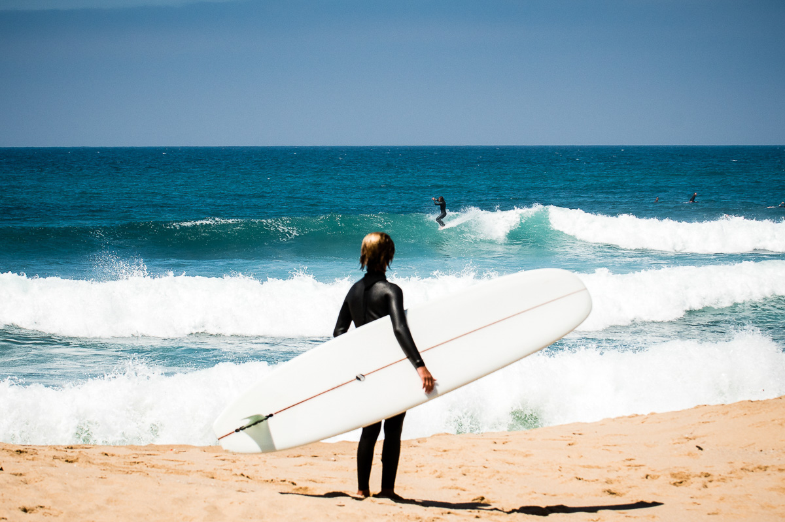

Who is Alec Cheng?

My name is Alec Cheng , I am currently a fifth year CPE student looking to learn something new.
I really enjoy playing video games(casual tft gamer), surfing, and fishing. I wouln't say that I am particularly good at any
of those activites but I really like spending time getting better.
From this club I'm hoping to learn as much as I can, meet other motivated people, and help the SLO community.